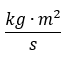

| Physical quantity | Symbol | Unit | Scalar/Vector |
|---|---|---|---|
| Linear momentum | |
Vector | |
| Angular momentum | |
 | Vector |
| Angular speed | |
Vector |
Angular momentum is a vector quantity (more precisely, a pseudovector) that represents the product of a body's rotational inertia and rotational velocity (in radians/sec) about a particular axis. However, if the particle's trajectory lies in a single plane, it is sufficient to discard the vector nature of angular momentum, and treat it as a scalar (more precisely, a pseudoscalar). Angular momentum can be considered a rotational analog of linear momentum. Thus, where linear momentum p is proportional to mass m and linear speed v.